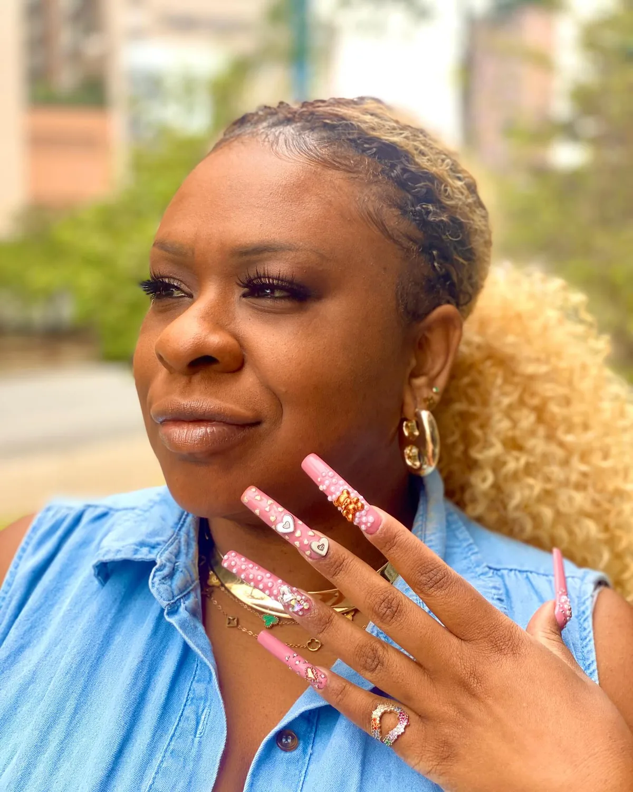
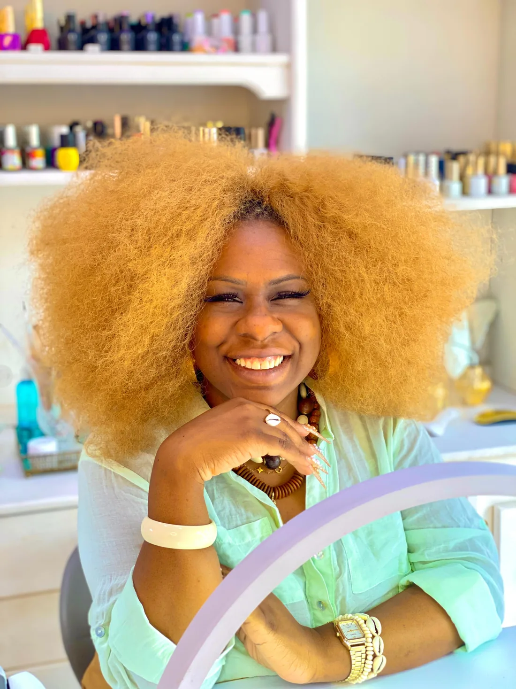
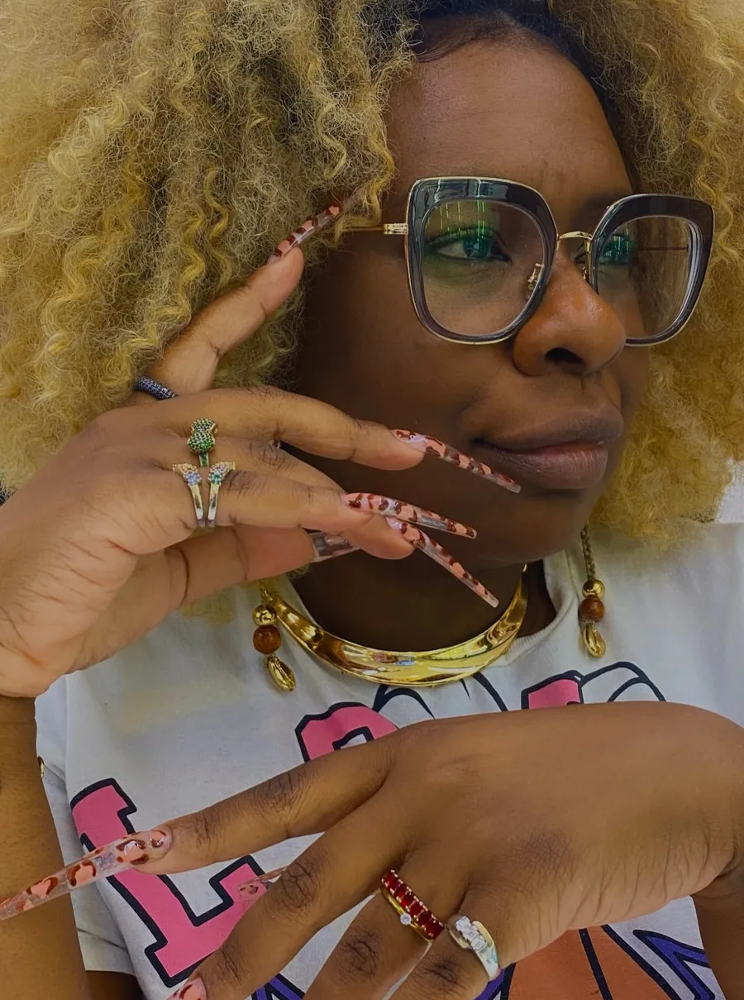

Negra Ba · Nail designer · Palestrante e mentora
Transformo manicure em profissão.
Educadora com mais de 27 anos de nails e mais de 50 mil alunas formadas. Entre na lista de espera e saiba primeiro dos próximos cursos.
- +27anos no nails
- +50 milalunas formadas
- 75,1 milseguidores no Instagram
- SPnovo espaço na Cidade Tiradentes
Do fundamento à nail art.
Estas são as técnicas da lista de espera da Negra Ba. Toque nas que você quer aprender e elas já ficam marcadas no formulário.
Garras afiadas, histórias pintadas à mão.
Trabalhos da mesa da Negra Ba. Como ela diz: tendência para alguns, repertório para quem tem história. Toque para ampliar.
Deslize para ver os trabalhos →
Azul floral Degradê translúcido Dourado e búzio Oncinha Amarelo e nude
Também com a Negra Ba
Empreendedoras da Beleza
Curso com o Grupo Boticário em que a Negra Ba atua como educadora. O link é o mesmo que ela divulga no Instagram.


Bagagem que vira profissão.
Negra Ba é nail designer, educadora, palestrante e mentora. Para ela, manicure não é subprofissão: tem estudo, sensibilidade e transformação em cada atendimento. Por isso escolheu investir a própria bagagem no seu país, no seu bairro e na sua gente.
- FundamentoTécnica, estrutura e domínio dos materiais antes de qualquer tendência.
- Valor profissionalEntender o mercado e reconhecer quanto vale o seu trabalho.
- AutoestimaCuidar das mãos também é um caminho para se reconhecer.
“A periferia merece o melhor.”Negra Ba, na abertura do novo espaço
Espaço Negra Ba, Cidade Tiradentes
Em novembro de 2026 ela abriu as portas de um espaço perto das próprias raízes, na zona leste de São Paulo, para levar beleza, conhecimento e excelência a quem mora ali.
Um lugar de encontro, acolhimento e troca de saberes, onde todo mundo é bem-vindo.
Conhecimento que circula.
Além dos cursos, a Negra Ba leva sua trajetória para eventos do setor e para salas de aula, falando de profissão, autoestima e iniciativa.
Evento do setorHair BrasilPresença na feira de beleza e educação profissional. PalestraFatec ItaqueraConversa com estudantes de Automação Industrial sobre trajetória, autoestima e iniciativa.
Saiba primeiro dos próximos cursos.
Conte o que você já faz e o que quer aprender. Assim a Negra Ba sabe qual turma avisar para você.
Dúvidas frequentes
Preciso já saber fazer unhas?
No formulário você marca as técnicas que já domina, inclusive “Nenhuma ainda”. Confirme com a Negra Ba o nível indicado para cada turma.
Quando abre a próxima turma?
Datas, formato e valores são informados por ela para quem está na lista de espera. Se quiser adiantar, chame no WhatsApp.
O que acontece depois que eu me inscrevo?
Seus dados entram na lista de espera da Negra Ba e ela avisa das novidades. O formulário não faz matrícula automática.
Onde fica o espaço Negra Ba?
Na Cidade Tiradentes, em São Paulo. Endereço e horários de atendimento você confirma pelo WhatsApp.